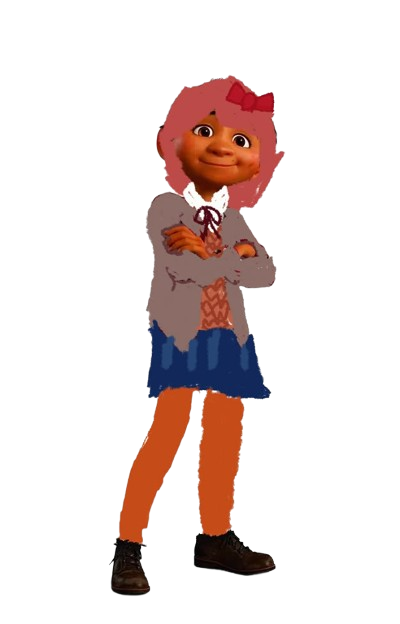

Sayori

Route de Sayori
Vidéo explicative
Sayori est l’une des quatre membres principales du Club de littérature dans Doki Doki Literature Club!. Elle est l’amie d’enfance du protagoniste et se distingue par son caractère joyeux, énergique et attentionné.
Elle est également celle qui convainc le protagoniste de rejoindre le club.
Derrière cette personnalité très joyeuse, Sayori cache cependant une profonde dépression. Elle explique qu’elle a souvent du mal à trouver la motivation pour faire les choses du quotidien et qu’elle ressent une grande tristesse qu’elle dissimule aux autres. Elle fait notamment croire au protagoniste que tout va bien afin de ne pas l'inquiéter.
Au fil de l'histoire, ses sentiments deviennent de plus en plus importants. Sayori révèle finalement au protagoniste qu'elle souffre de dépression et qu'elle éprouve des sentiments amoureux pour lui. Après sa déclaration, l'histoire prend une tournure tragique : Sayori meurt par suicide.
Sayori est donc un personnage important parce que son histoire montre que son apparence joyeuse ne reflète pas forcément ce qu'elle ressent réellement. Son parcours constitue également l'un des premiers éléments qui révèlent au joueur que Doki Doki Literature Club! est bien plus sombre qu'un simple jeu de romance et de littérature.